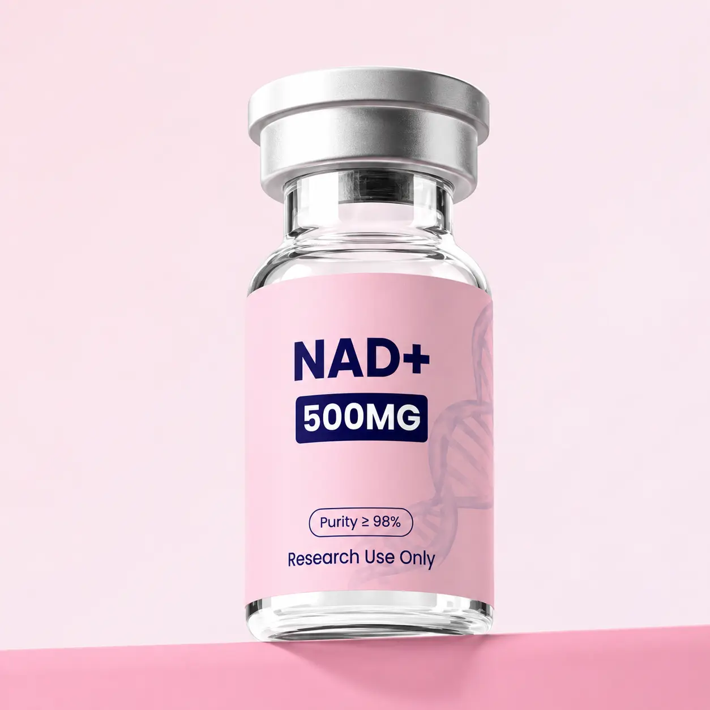

SINGLE PEPTIDE / PRODUCT
NAD+
NAD+ (nicotinamide adenine dinucleotide) is a coenzyme used in cellular redox reactions. It is included here as a laboratory research compound rather than as a peptide.
Product overview
NAD+ (nicotinamide adenine dinucleotide) is a coenzyme used in cellular redox reactions. It is included here as a laboratory research compound rather than as a peptide.
NAD+ participates in reactions involving multiple enzyme families. Its chemical identity alone says nothing about the concentration, purity, or formulation supplied by Glow Aminos.
Product specifications
- Catalog category
- Peptide Compounds
- Compound class
- Dinucleotide coenzyme
- CAS number
- 53-84-9
- Molecular formula
- C21H27N7O14P2
- Molecular weight
- 663.43 g/mol
Catalog strength, formulation, lot purity, and storage instructions are not verified. Molecular identifiers above describe the named compound, not this product’s test result.
Certificate of analysis (COA)
No Glow Aminos batch-specific COA has been provided for this product. Check the COA library for published documents.
Shipping & returns
Shipping is a flat $10 per order. See shipping information and returns & refunds for current details.